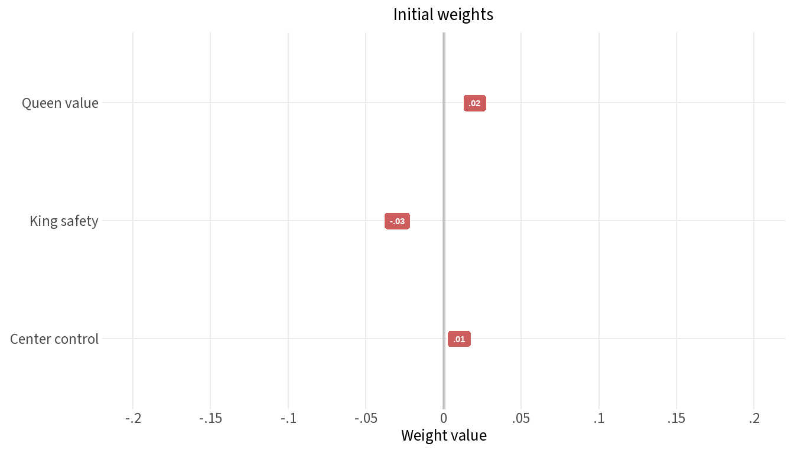
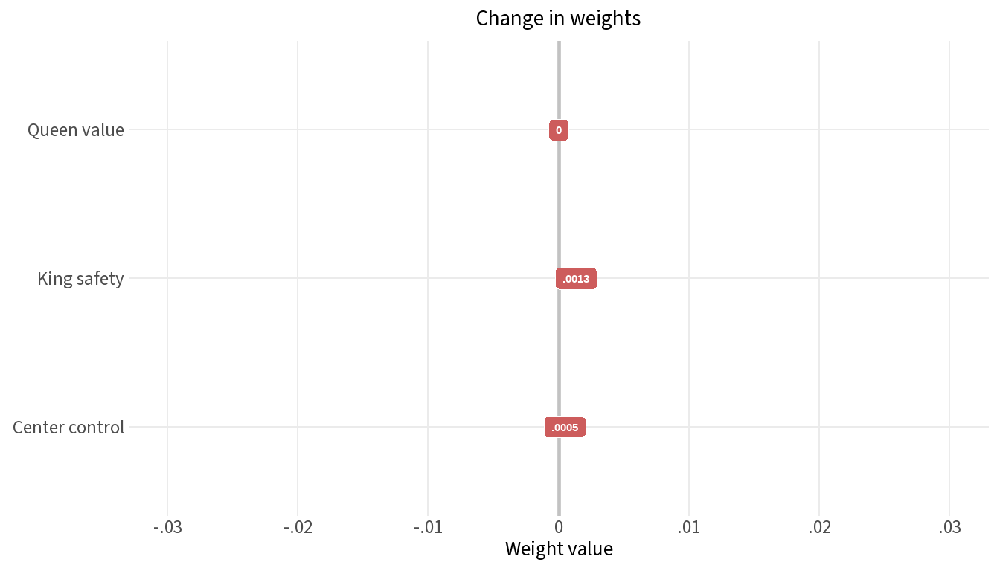
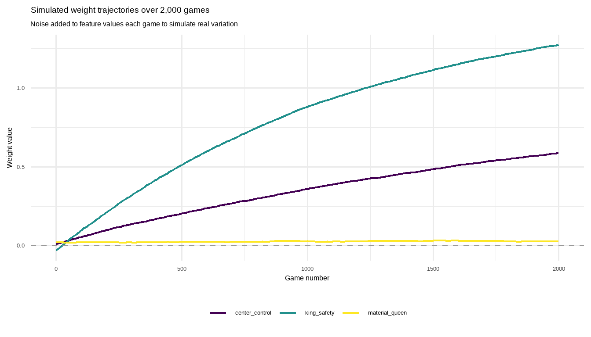

Feature | Description |
|---|---|
material_queen | Net queen advantage (my queens minus opponent's) |
king_safety | Composite king safety score (positive = safer) |
center_control | Control of the four central squares (positive = better) |
How the Chess Engine Learns
A step-by-step walkthrough of one self-play game and its weight update
Overview
This document walks through the engine’s learning process in detail, using a single short chess game as a concrete example. By the end you should understand:
- What a weight is and what it represents
- How the engine evaluates a board position using those weights
- How a game’s result is used to update the weights via temporal difference learning
- Why some concepts (like queen value) are learned faster than others
The evaluation function
The engine knows nothing about chess strategy on its own. Instead, it measures a handful of features of any board position and combines them into a single score using a weighted sum:
\[\text{score} = w_1 \times x_1 + w_2 \times x_2 + \cdots + w_n \times x_n\]
A positive score means the position looks good for the side to move; negative means it looks bad.
In this tutorial we use three features to keep things readable. The real engine has twelve.
Starting weights
The weights start as small random numbers. The engine has no prior knowledge — it has to discover what matters entirely from the games it plays.
feature | label | weight |
|---|---|---|
material_queen | Queen value | 0.02 |
king_safety | King safety | -0.03 |
center_control | Center control | 0.01 |

At this point, the engine evaluates almost every position as roughly equal — the weights are too small to distinguish good positions from bad ones.
The game: Scholar’s Mate
We’ll use Scholar’s Mate — a four-move checkmate — as our example. It’s short enough to trace every step, and it has a decisive result (white wins), which produces a clear learning signal.
The moves are: 1. e4 e5 2. Bc4 Nc6 3. Qh5 Nf6?? 4. Qxf7#
White wins by exploiting the weakness of black’s f7 square. King safety is the critical factor in this game — the engine should learn that from these four positions.
Ply | To move | material_queen | king_safety | center_control | comment |
|---|---|---|---|---|---|
1 | white | 0 | 0.10 | 0.15 | After 1.e4 e5 — white to move |
2 | black | 0 | -0.25 | -0.10 | After 2.Bc4 — black to move |
3 | white | 0 | 0.20 | 0.10 | After 2...Nc6 — white to move |
4 | black | 0 | -0.75 | -0.10 | After 3...Nf6?? — black to move |
Feature values at each position (from the side-to-move's perspective) | |||||
NoteWhy “from the side-to-move’s perspective”?
The engine uses the same evaluation function for both colours. When it is black’s turn, a feature value of −0.75 for king_safety means black’s king is in danger. The sign of the feature value already encodes whose position is worse. This lets one set of weights serve both sides symmetrically.
What the engine actually sees
The positions above use hand-crafted values to keep the arithmetic clear. Here we run the actual feature extractor on each ply of Scholar’s Mate and apply the same temporal difference update — so you can see how the real numbers compare.
Ply | Move | To move | King safety | Center control | Queen material | Prediction | Target | Error | w king safety | w center control | w queen material |
|---|---|---|---|---|---|---|---|---|---|---|---|
1 | 1.e4 | white | 0 | 0 | 0 | 0.000 | 1 | 1.000 | 0.000 | 0.000 | 0 |
2 | 1...e5 | black | 0 | -1 | 0 | 0.000 | -1 | -1.000 | 0.000 | 0.000 | 0 |
3 | 2.Bc4 | white | 0 | 0 | 0 | 0.000 | 1 | 1.000 | 0.000 | 0.001 | 0 |
4 | 2...Nc6 | black | -1 | 0 | 0 | 0.000 | -1 | -1.000 | 0.000 | 0.001 | 0 |
5 | 3.Qh5 | white | 1 | -1 | 0 | 0.000 | 1 | 1.000 | 0.001 | 0.001 | 0 |
6 | 3...Nf6?? | black | -1 | 0 | 0 | -0.002 | -1 | -0.998 | 0.002 | 0.000 | 0 |
7 | 4.Qxf7# | white | 1 | -2 | 0 | 0.003 | 1 | 0.997 | 0.003 | 0.000 | 0 |
Weights shown are values before the update at that ply. All weights start at zero. | |||||||||||
The Temporal Difference Update, Position by Position
After the game ends — white wins — we work backwards through every position and ask: “given what I now know about how this game turned out, how wrong was my evaluation at that point, and which weights were responsible?”
The target for each position is the game result from that side’s perspective: - White to move and white wins → target = +1 - Black to move and white wins → target = −1
The error is target − prediction. A large error means the engine’s evaluation was badly wrong and the weights need a bigger nudge.
Ply | To move | Prediction | Target | Error | Δ material_queen | Δ king_safety | Δ center_control |
|---|---|---|---|---|---|---|---|
1 | white | -0.00150 | 1 | 1.00 | 0 | 0.00010 | 0.00015 |
2 | black | 0.00646 | -1 | -1.01 | 0 | 0.00025 | 0.00010 |
3 | white | -0.00490 | 1 | 1.00 | 0 | 0.00020 | 0.00010 |
4 | black | 0.02105 | -1 | -1.02 | 0 | 0.00077 | 0.00010 |
Temporal difference update at each position — error drives the weight nudges | |||||||
A few things to notice:
- Ply 1: The engine predicted nearly 0 (weights are tiny). Target is +1 (white will win). Large error → noticeable nudges to
king_safetyandcenter_control. - Ply 2: Black is to move, so target is −1. The engine again predicted nearly 0. Because
king_safetyis −0.25 (bad for black), the nudge pushes the king safety weight upward — a position where king safety is negative, combined with a loss, is consistent evidence that king safety matters. - Ply 4: The error is largest here.
king_safetyis −0.75 (black king about to be mated) and the target is −1. The nudge toking_safetyis the biggest in the game — this is the most informative position. material_queennever changes: it was 0.0 in all four positions (no queens were captured). A feature contributes to learning only when it varies.
Weights before and after
Feature | label | Before | After | Change |
|---|---|---|---|---|
material_queen | Queen value | 0.02 | 0.0200 | 0.000000 |
king_safety | King safety | -0.03 | -0.0287 | 0.001319 |
center_control | Center control | 0.01 | 0.0105 | 0.000453 |
Weight values before and after one game of Scholar's Mate | ||||

The changes after a single game are tiny — that’s intentional. The learning rate (0.001) is deliberately small to prevent any one game from overwriting what was learned from all previous games.
What happens over many games
One game produces nudges too small to see in practice. The power of the approach comes from repetition. Here is a simulated illustration: we run the same four Scholar’s Mate positions through 2,000 games, adding a small amount of noise to the feature values each time to represent the natural variation between real games.

king_safety climbs steadily toward a positive value because it consistently distinguishes winning positions from losing ones. center_control also rises, but more slowly — it is a weaker signal in Scholar’s Mate. material_queen stays near zero because it never varies in this particular game sequence; in a real training run with many types of games, it would rise quickly as queen advantage is one of the strongest predictors of winning.
TipThe key intuition
Each weight is asking a question: does this feature predict winning?
If yes, the weight grows. If the feature is irrelevant, it stays near zero.
If the feature accidentally correlates with losing, it goes negative.
After thousands of games, the weights reflect the true structure of chess.